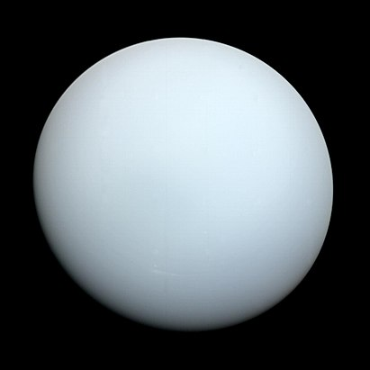

Уран
Уран — седьмая по удалённости от Солнца планета Солнечной системы. Она была открыта в 1781 году английским астрономом Уильямом Гершелем и названа в честь греческого бога неба Урана.
Общие характеристики
Атмосфера планеты окрашена в однородный сине-зелёный цвет. Учёные предполагают, что такой её делает метан. В отличие от газовых гигантов — Сатурна и Юпитера, состоящих в основном из водорода и гелия, в недрах Урана и схожего с ним Нептуна отсутствует металлический водород, но зато много льда в его высокотемпературных модификациях. По сути, Уран — это шар из газа и льда. По этой причине специалисты выделили эти две планеты в отдельную категорию «ледяных гигантов».
У ледяного гиганта Урана нет твердой поверхности. Его газообразная атмосфера переходит во внутреннюю жидкую оболочку. По поверхности Урана не получится прогуляться или посадить на нее космический аппарат — вы просто утонете. Кстати, то же самое произойдет и на Юпитере. Уран — самая холодная планета в системе, несмотря на то, что она не самая удаленная от Солнца: средняя температура его поверхности составляет −224°C. Скорость ветра на Уране достигает 900 км/ч. Некоторые ученые считают, что причина в наклоне его оси вращения; другие предполагают, что в результате столкновения с другим объектом, Уран потерял большую часть внутреннего жара и температура ядра планеты снизилась. Солнечный свет летит до Урана чуть менее трёх часов, а год на планете равен 84 земным.
У Урана известно 13 колец. Внутренние узкие кольца выглядят темно-серыми, а два внешних кольца — яркие. Кольца Урана состоят из водяного льда и радиоактивной органики. На настоящий момент известно 23 спутника Урана, все покрыты льдом. Уран — самая отдаленная планета Солнечной системы, которую можно наблюдать без оптики.
Время на Уране
Уран совершает полный оборот вокруг своей оси каждые 17 часов 14 минут. Однако год на нем длится 30 687 дней, что равно 84 земным годам. Так же, как и Венера, Уран вращается вокруг своей оси в обратную от Земли сторону.
История открытия
Уран стал первой планетой, обнаруженной в Новое время и при помощи телескопа - её открыл английский астроном Уильям Гершельи в 1781 году. Через 8 лет после этого события, немецкий химик Мартин Клапрот открыл новый химический элемент, назвав его также «уран» - в честь самой далёкой из известных тогда планет. Несмотря на то, что порой Уран различим невооружённым глазом, более ранние наблюдатели принимали его за тусклую звезду.